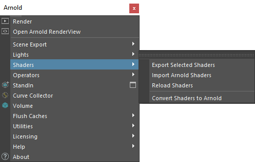
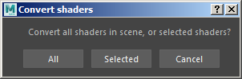
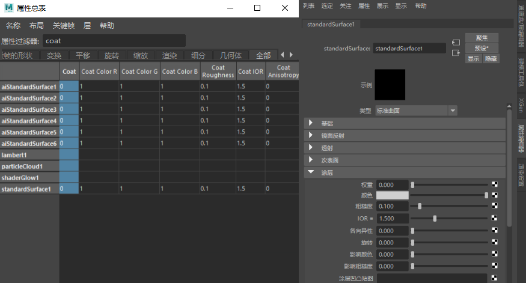

使用此选项可以将 Maya 或 mental ray 的现有资源转化到 Arnold for Maya。
MtoA 安装文件夹的 \scripts 目录中还提供了 convertShaders.py 示例转化脚本。例如，在 Windows 中，位置为：
scripts\mtoa\convertShaders.py
此简单脚本将以下着色器转化为 standard_surface 着色器：
aiStandard、aiHair、alSurface、alHair、alLayerColor、alRemapColor、alRemapFloat、alFractal、alFlake、alLayer、lambert、blinn、phong、VRayMtl、mia_material_x_passes、mia_material_x 和 dielectric_material。

Maya 着色器将转化为 standard_surface 着色器，此着色器与 Maya 着色器的属性非常接近。
已转化的 standard_surface 着色器渲染黑色 Phong 反射率值转化为 coat_weight: 1。这可能会导致任何新转化的 standard_surface 着色器渲染为黑色。如果是这样，则尝试将 coat_weight 设置为 0。
